1.搭建私有的yum仓库 环境：server端 10.0.0.129
client端 10.0.0.130
server端本地yum源：/etc/yum.repos.d/base.repo
1 2 3 4 5 6 7 8 9 10 11 12 13 14 15 16 17 18 19 20 21 22 23 [base]$releasever /os/$basearch /$releasever $releasever /$basearch /$releasever $releasever /extras/$basearch /$releasever $releasever /updates/$basearch /$releasever
安装nginx，添加yum源的web端发布 添加base，epel，extras，appstream源的发布
1 2 3 4 5 6 7 8 9 10 cd nginx-1.20.2 ; ./configure --perfix=/usr/local/nginx
1.配置nginx服务器 1 2 3 4 5 6 7 8 9 10 11 12 13 14 15 16 17 18 19 20 21 22 23 24 25 26 27 28 29 30 31 32 vim /usr/local/nginx/conf/nginx.conflisten 8080 ;server_name localhost;root /usr/local/nginx/html/repo;autoindex on ;error_page 500 502 503 504 /50x.html;location = /50x.html {root html;nginx -s reload
2.访问站点查看是否生效：10.0.0.129:8080 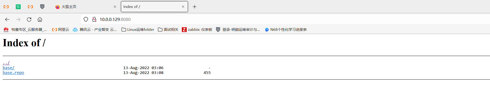
在server端搭建yum源 1.同步本地的yum源packages到repo目录 1 2 3
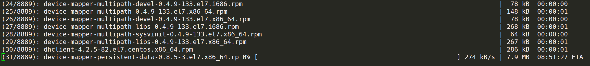
2.创建源数据 1 2 3 4 5 6 7 8 9
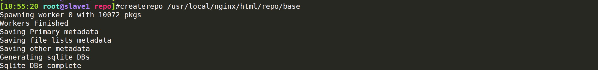
3.制作yum源文件 这里制作yum源文件的时候，由于只有一个base.repo，所以包括base库，extras库，updates库，epel库都写在一起，用于给其他的client获取，地址写本机的IP地址10.0.0.129
1 2 3 4 5 6 7 8 9 10 11 12 13 14 15 16 17 18 19 20 21 22 23 24 25 26 27 28 29 30 31 32 33 34 35 for Enterprise Linux 7
client测试yum仓库 yum源文件必须放在/etc/yum.repos.d才生效，记得加上10.0.0.129:8080端口
1 2 3 4 5 6 7 8 9 mkdir /etc/yum.repos.d/backupmv /etc/yum.repos.d/* backup
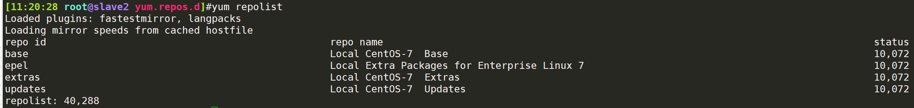
查看bind-utils有无，测试，证明yum源搭建成功
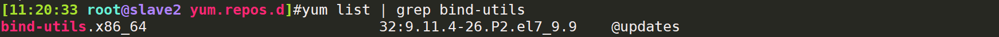
2.阅读《图解TCP/IP》一书 地址：https://leon-wtf.github.io/doc/%E5%9B%BE%E8%A7%A3TCPIP.pdf ，有时间的可以写下读书笔记
3.TCP三次挥手/四次挥手 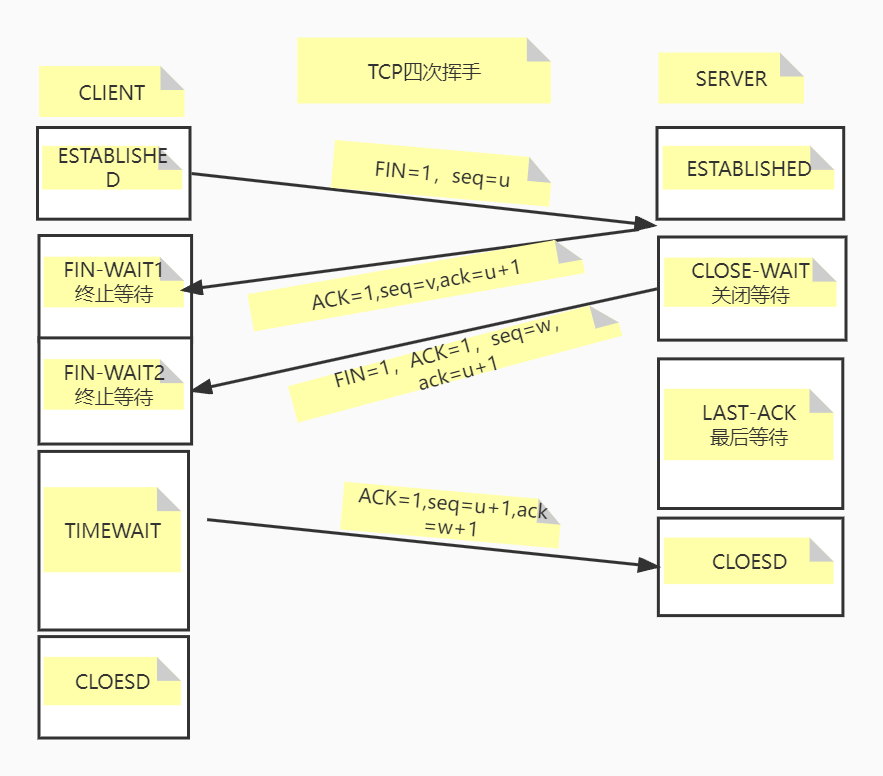
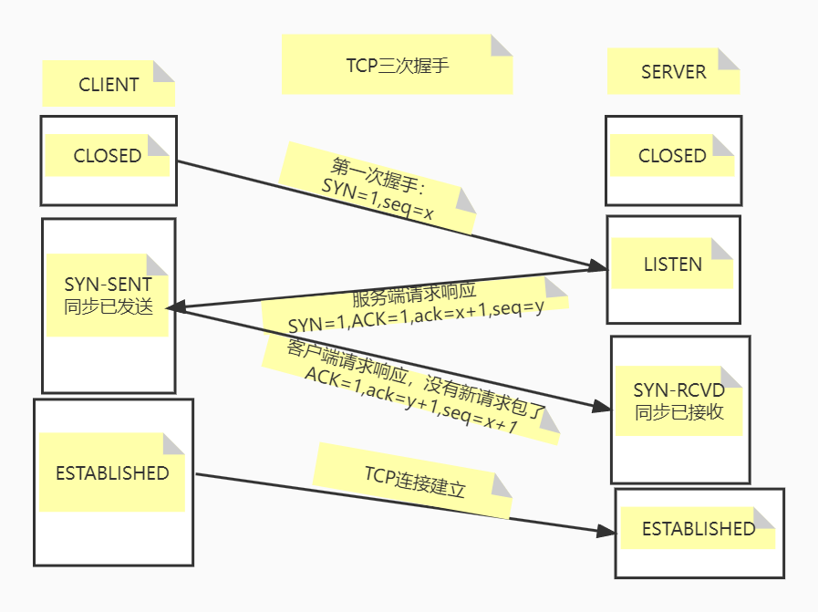
4.静态配置网卡IP，centos/ubuntu实现 1 2 3 4 5 6 7 8 9 10 11 12 13 14 15 16 17 18 19 20 21 22 23 24 "static"
5.实现脚本功能 1 2 3 4 5 6 7 8 9 10 11 12 13 14 15 16 17 18 19 20 21 22 23 24 25 26 27 28 29 30 31 32 33 34 35 36 37 38 39 40 41 42 43 44 45 46 47 48 49 50 51 52 53 54 55 56 57 58 59 60 61 62 63 64 65 66 67 68 69 70 71 72 73 74 75 76 77 78 79 80 81 82 83 84 85 86 87 88 89 90 91 92 93 94 95 96 97 98 99 100 101 102 103 104 105 106 107 108 109 110 111 112 113 114 115 116 117 118 119 120 121 122 123 124 125 126 127 128 129 130 131 132 133 134 135 136 137 138 139 140 141 #!/bin/bash MYSQL echo "MYSQL" APACHE '/ID/{print $2}' /etc/os-release | head -n 1 | sed 's/\"//g' `if [ $OS == "centos" ] ;then echo "apache install" || yum -y install httpd;systemctl enable --now httpdelif [ $OS == "ubuntu" ] ;then echo "ubuntu httpd is installed" || apt update; apt -y install httpd else echo "invalid $OS " fi echo "httpd test" > /var/www/html/index.htmlEXPECT cd /root ; rm -rf .ssh"" -f /root/.ssh/id_rsa &>/dev/nullwhile [ $x -le ${#host[*]} ] ; do ${host[$x]} cat << EOF EXPECT选项 1.expect:执行免秘钥 2.exit:退出 EOF read -p "please input your choice:" choicecase $choice in "expect" )if [ $x -lt ${#host[*]} ];then let x++ EOF spawn ssh-copy-id root@$i expect { "yes/no" {send "yes\n";exp_continue} "password" {send "$pass1\n"} } expect eof EOF "主机$i SSH成功" true else echo "已经达到数组最大长度，退出" break fi "exit" ) break ;; esac done while :do echo "输入想要实现的功能：" in 安装MySQL 安装apache EXPECT测试 EXIT退出;do case $REPLY in exit 2 ;; esac done done
实现效果 主界面 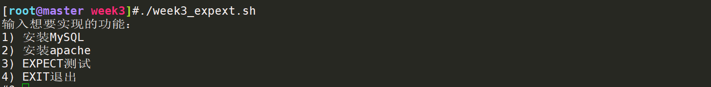
执行安装Apache(已安装) 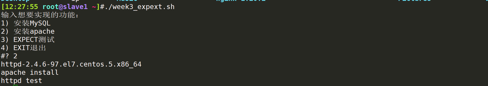
执行安装 Apache(未安装) 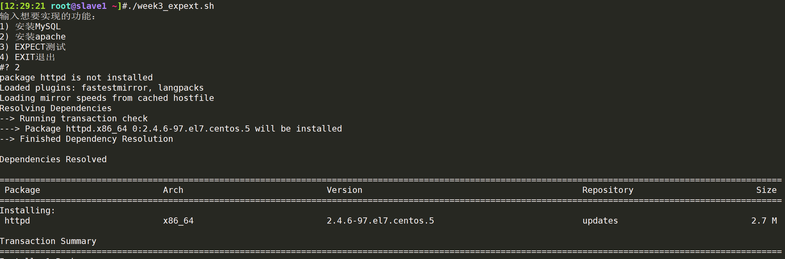
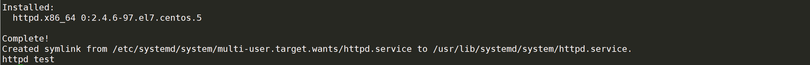
执行第一次expect 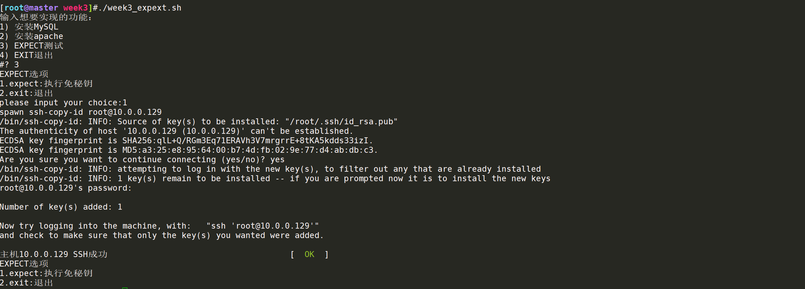
测试scp文件是否能够免秘钥传输到10.0.0.129
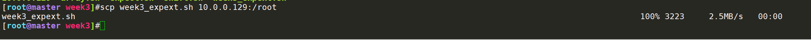
执行第二次expect 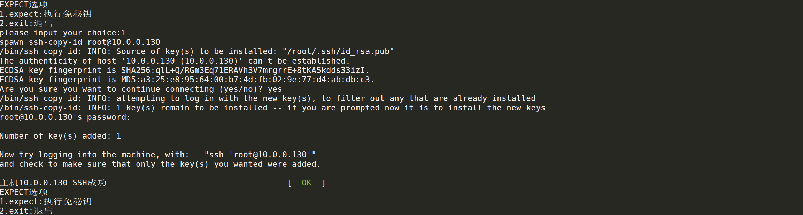
达到数据长度上限，退出脚本 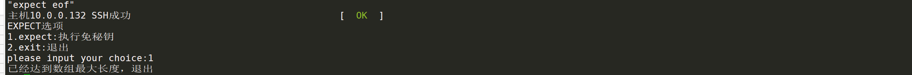